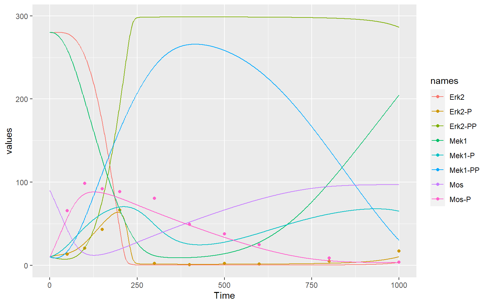
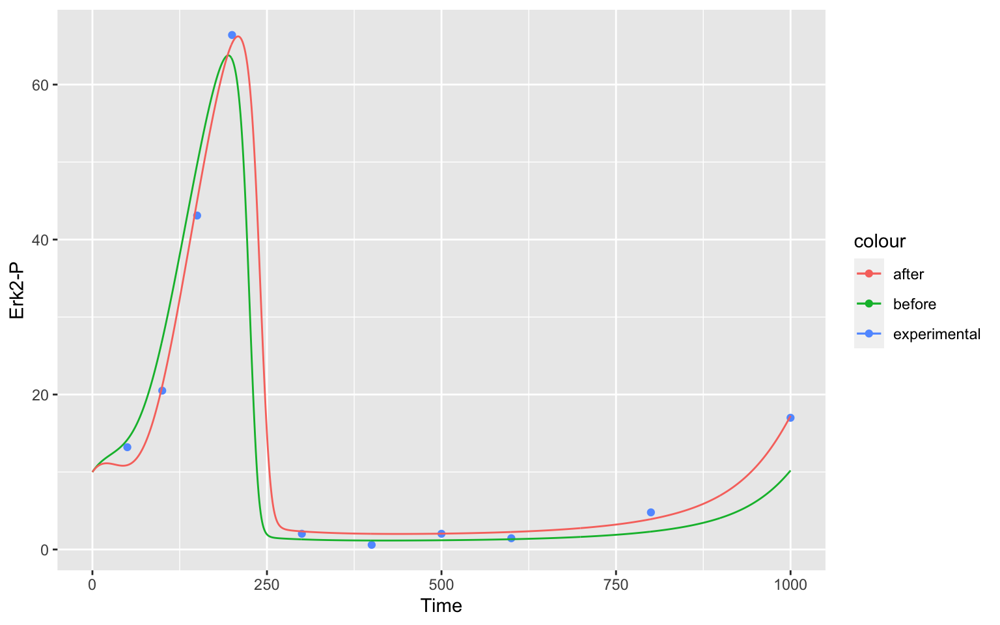
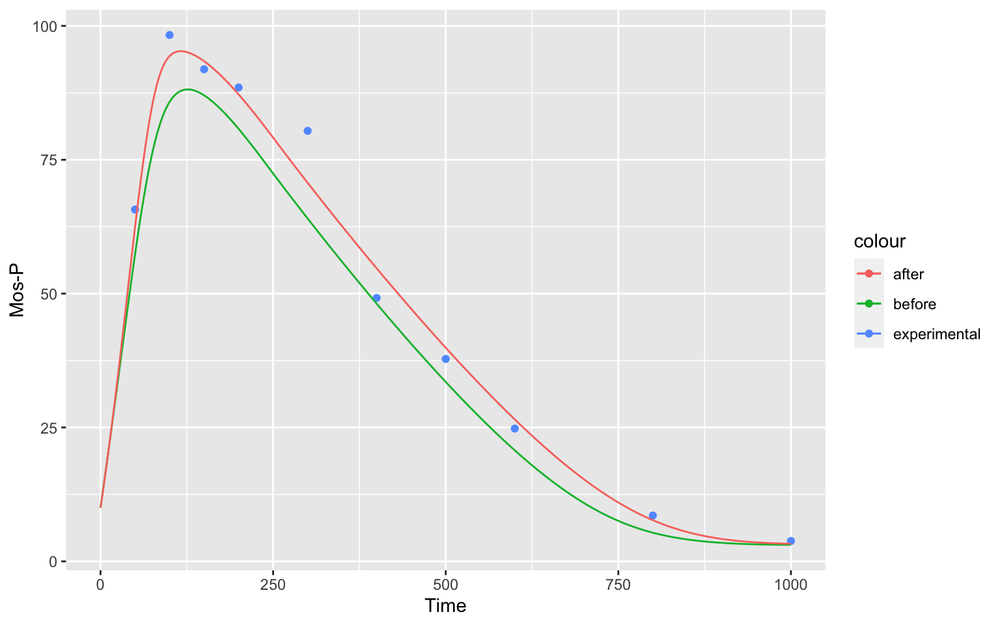

In this workflow we will show you an implementation of a parameter estimation from the Mendes 2009 paper1 on COPASI use cases.
Click here to go to the interactive implementation of this document as a Shiny website which is hosted on the free service of shinyapps.io!
You can see a time course of the species of the model below. The points are measurements of two of the species in the model.
#> # A COPASI model reference:
#> Model name: "Kholodenko2000 - Ultrasensitivity and negative feedback bring oscillations in MAPK cascade"
#> Number of compartments: 1
#> Number of species: 8
#> Number of reactions: 10
As you can see, the model does not describe the data perfectly. We will try and get a better result by changing the parameters of our model.
We want to find the parameters of our model that describe the data best. We call this Parameter Estimation. We have 22 parameters in our model, so finding the right combination of parameters by chance and just trying out is nearly impossible. Even only using a limited subset of these parameters (as we will do) will not work that way. We will use algorithms for that.
Parameter estimation is an important topic when handling a model. In CoRC you have to
We will go through these steps individually and explain what needs to be done as well as show visually how parameter estimation improves your fit.
First, we have to load the required packages. Please make sure, you have CoRC as well as ggplot2 installed before calling the library function.
library(CoRC)
library(ggplot2)As stated above, to make a parameter estimation, you have to have a model to work on. If you want to know how to build you own model, you can click here.
In this workflow, we will instead load an SBML-model. This model is from Kholodenko (2000)2
loadSBML("https://www.ebi.ac.uk/biomodels/model/download/BIOMD0000000010.2?filename=BIOMD0000000010_url.xml")
#> # A COPASI model reference:
#> Model name: "Kholodenko2000 - Ultrasensitivity and negative feedback bring oscillations in MAPK cascade"
#> Number of compartments: 1
#> Number of species: 8
#> Number of reactions: 10
# loadSBML("https://raw.githubusercontent.com/jpahle/DynamiCoRC/main/models/BIOMD0000000010_url.xml")We can inspect the species of the model like this:
getSpecies()
#> # A tibble: 8 × 13
#> key name compartment type unit initial_concent… initial_number
#> <chr> <chr> <chr> <chr> <chr> <dbl> <dbl>
#> 1 Mos{uVol} Mos uVol react… nmol… 90 5.42e16
#> 2 Mos-P{uVol} Mos-P uVol react… nmol… 10 6.02e15
#> 3 Mek1{uVol} Mek1 uVol react… nmol… 280 1.69e17
#> 4 Mek1-P{uVol} Mek1-P uVol react… nmol… 10 6.02e15
#> 5 Mek1-PP{uVol} Mek1-PP uVol react… nmol… 10 6.02e15
#> 6 Erk2{uVol} Erk2 uVol react… nmol… 280 1.69e17
#> 7 Erk2-P{uVol} Erk2-P uVol react… nmol… 10 6.02e15
#> 8 Erk2-PP{uVol} Erk2-PP uVol react… nmol… 10 6.02e15
#> # … with 6 more variables: concentration <dbl>, number <dbl>, rate <dbl>,
#> # number_rate <dbl>, initial_expression <chr>, expression <chr>This works in a similar way for reactions
(getReactions()) and parameters
(getParameters())
If you have COPASI installed, you can also have a look at the model there by starting the GUI with this model loaded already:
openCopasi()Defining an experiment in CoRC means telling the program which data to fit and what the data actually describes.
So we first need data. It is always a good idea to take a look at your data before working with it. This way you can make sure nothing unexpected is happening.
data <- read_tsv("data/MAPKdata1.txt", col_types = cols())
data
#> # A tibble: 10 × 3
#> Time `Mos-P` `Erk2-P`
#> <dbl> <dbl> <dbl>
#> 1 50 65.7 13.2
#> 2 100 98.3 20.5
#> 3 150 91.9 43.1
#> 4 200 88.5 66.4
#> 5 300 80.4 2.03
#> 6 400 49.2 0.6
#> 7 500 37.8 2.03
#> 8 600 24.8 1.45
#> 9 800 8.56 4.79
#> 10 1000 3.8 17Then you have to define the experiment for COPASI. You need the data, as well as the type and mappings for the species. You can choose a weight method for your data (which prevents parameters getting fitted more closely just because they have higher values).
Your data columns in your data file can be of type “time”, “dependent” and “independent”, and if you want to exclude a column you can choose “ignore”.
The mapping argument in the function maps the data columns with the
species in your model. In our case, the provided data is time course
data, and our values are “transient concentrations”. They are denoted
like this: {[Species]}. You can find these notation by using the
function getSpeciesReferences().
Time needs to be mapped with NA.
Allowed weight methods are "mean",
"mean_square", "sd", and
"value_scaling".
fit_experiments <- defineExperiments(
data = data,
type = c("time", "dependent", "dependent"),
mapping = c(NA, "{[Mos-P]}", "{[Erk2-P]}"),
weight_method = "mean_square"
)We now have to define parameters that will be fitted.
First, let us take a look at all the parameters in the model:
getParameters()
#> # A tibble: 22 × 5
#> key name reaction value mapping
#> <chr> <chr> <chr> <dbl> <chr>
#> 1 (MAPKKK activation).V1 V1 MAPKKK activation 2.5 <NA>
#> 2 (MAPKKK activation).Ki Ki MAPKKK activation 9 <NA>
#> 3 (MAPKKK activation).n n MAPKKK activation 1 <NA>
#> 4 (MAPKKK activation).K1 K1 MAPKKK activation 10 <NA>
#> 5 (MAPKKK inactivation).V2 V2 MAPKKK inactivation 0.25 <NA>
#> 6 (MAPKKK inactivation).KK2 KK2 MAPKKK inactivation 8 <NA>
#> 7 (phosphorylation of MAPKK).k3 k3 phosphorylation of MAP… 0.025 <NA>
#> 8 (phosphorylation of MAPKK).KK3 KK3 phosphorylation of MAP… 15 <NA>
#> 9 (phosphorylation of MAPKK-P).k4 k4 phosphorylation of MAP… 0.025 <NA>
#> 10 (phosphorylation of MAPKK-P).KK4 KK4 phosphorylation of MAP… 15 <NA>
#> # … with 12 more rowsNow, we only want to fit the reaction rates (parameters with V). To
make our fit parameters we need to make a list of lists with the
attributes of the different parameter-estimation settings. To
define a parameter for parameter estimation, we use the
defineParameterEstimationParameter() function.
fit_parameters <- list(
defineParameterEstimationParameter(
ref = "{(MAPKKK activation).V1}",
start_value = getParameters("(MAPKKK activation).V1")$value,
lower_bound = getParameters("(MAPKKK activation).V1")$value * 0.1,
upper_bound = getParameters("(MAPKKK activation).V1")$value * 1.9
),
defineParameterEstimationParameter(
ref = "{(MAPKKK inactivation).V2}",
start_value = getParameters("(MAPKKK inactivation).V2")$value,
lower_bound = getParameters("(MAPKKK inactivation).V2")$value * 0.1,
upper_bound = getParameters("(MAPKKK inactivation).V2")$value * 1.9
),
defineParameterEstimationParameter(
ref = "{(dephosphorylation of MAPKK-PP).V5}",
start_value = getParameters("(dephosphorylation of MAPKK-PP).V5")$value,
lower_bound = getParameters("(dephosphorylation of MAPKK-PP).V5")$value * 0.1,
upper_bound = getParameters("(dephosphorylation of MAPKK-PP).V5")$value * 1.9
),
defineParameterEstimationParameter(
ref = "{(dephosphorylation of MAPKK-P).V6}",
start_value = getParameters("(dephosphorylation of MAPKK-P).V6")$value,
lower_bound = getParameters("(dephosphorylation of MAPKK-P).V6")$value * 0.1,
upper_bound = getParameters("(dephosphorylation of MAPKK-P).V6")$value * 1.9
),
defineParameterEstimationParameter(
ref = "{(dephosphorylation of MAPK-PP).V9}",
start_value = getParameters("(dephosphorylation of MAPK-PP).V9")$value,
lower_bound = getParameters("(dephosphorylation of MAPK-PP).V9")$value * 0.1,
upper_bound = getParameters("(dephosphorylation of MAPK-PP).V9")$value * 1.9
),
defineParameterEstimationParameter(
ref = "{(dephosphorylation of MAPK-P).V10}",
start_value = getParameters("(dephosphorylation of MAPK-P).V10")$value,
lower_bound = getParameters("(dephosphorylation of MAPK-P).V10")$value * 0.1,
upper_bound = getParameters("(dephosphorylation of MAPK-P).V10")$value * 1.9
)
)To show how well our parameter estimation works, we want to print the model before and after parameter estimation. To do this, we have to run two time course evaluations, one with the parameters now, and one with the parameters after the parameter estimation.
before <- runTimeCourse(duration = 1000, dt = 1)$resultAfter doing this, we will now actually run the parameter estimation.
We need the parameters, experiments with our data that will be fitted,
and specify the method. We want to use the Levenberg Marquardt method
but other methods are available as well. You can find them using the
function getValidReactionFunctions() with your function as
an argument.
Also, we specify that we want to update our model. This means, that all estimated parameters will be updated with the parameters of the best estimation. To compare the fit to the previous parameters we need to make sure we keep the previous fit. We already did that with our time course in the last chunk.
result <-
runParameterEstimation(
parameters = fit_parameters,
experiments = fit_experiments,
method = list(
method = "LevenbergMarquardt",
log_verbosity = 2
),
update_model = TRUE
)You can have a nicely readable version of the result by using the
function str(result). For space-reasons we will only take a
look at the fitted parameters, but feel free to take a look at anything
you find interesting.
result$parameters
#> # A tibble: 6 × 8
#> parameter lower_bound start_value value upper_bound std_deviation
#> <chr> <dbl> <dbl> <dbl> <dbl> <dbl>
#> 1 (MAPKKK activation).V1 0.25 2.5 2.39 4.75 0.137
#> 2 (MAPKKK inactivation)… 0.025 0.25 0.243 0.475 0.00818
#> 3 (dephosphorylation of… 0.075 0.75 0.719 1.42 0.0992
#> 4 (dephosphorylation of… 0.075 0.75 1.42 1.42 0.479
#> 5 (dephosphorylation of… 0.05 0.5 0.799 0.95 0.0827
#> 6 (dephosphorylation of… 0.05 0.5 0.810 0.95 0.105
#> # … with 2 more variables: coeff_of_variation <dbl>, gradient <dbl>Now we have estimated and updated the parameters of our current model. To compare our old model parameters to our new, we run another time course.
after <- runTimeCourse(duration = 1000, dt = 1)$resultWe will use ggplot for visualizing our results. If you have never worked with ggplot, this way to define a plot will look unusual to you.
We first want to plot our experimental data, as well as two time courses (before and after) for Erk2-P and Mos-P.
Erk2P <-
ggplot(mapping = aes(x = Time, y = `Erk2-P`)) +
geom_point(data = data, aes(color = "experimental")) +
geom_line (data = before, aes(color = "before")) +
geom_line (data = after, aes(color = "after"))
MosP <-
ggplot(mapping = aes(x = Time, y = `Mos-P`)) +
geom_point(data = data, aes(color = "experimental")) +
geom_line (data = before, aes(color = "before")) +
geom_line (data = after, aes(color = "after"))At the end, our result for Erk2-P
Erk2P
as well as our result for Mos-P
MosP
show, how well the parameter estimation was able to fit our model to the data.
At the end, we can unload our model, to free some memory.
unloadModel()Mendes P., Hoops S., Sahle S., Gauges R., Dada J., Kummer U. (2009) Computational Modeling of Biochemical Networks Using COPASI. In: Maly I. (eds) Systems Biology. Methods in Molecular Biology (Methods and Protocols), vol 500. Humana Press. https://doi.org/10.1007/978-1-59745-525-1_2↩︎
Kholodenko BN. Negative feedback and ultrasensitivity can bring about oscillations in the mitogen-activated protein kinase cascades. Eur J Biochem. 2000 Mar;267(6):1583-8. doi: 10.1046/j.1432-1327.2000.01197.x. PMID: 10712587.↩︎